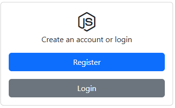
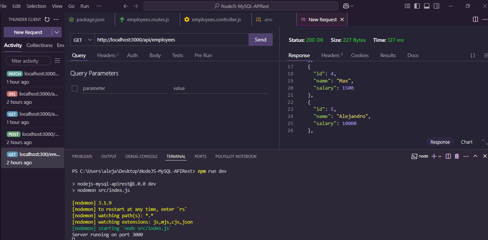
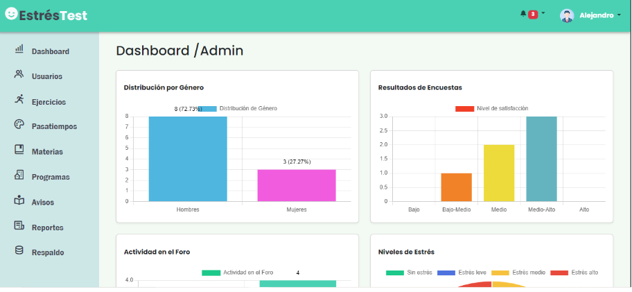

¡Bienvenido a mi página web! Soy un desarrollador web especializado en backend, apasionado por crear soluciones eficientes y escalables. En este sitio encontrarás información sobre mis proyectos, habilidades y experiencia en el desarrollo de aplicaciones. Trabajo con tecnologías como Node.js, Express, bases de datos SQL y NoSQL, APIs REST y autenticación.
Descargar CVContactame
En los últimos 3 años, he trabajado en varios proyectos académicos en la Universidad Politécnica del Estado de Morelos, lo que me ha permitido adquirir experiencia. Durante este tiempo, he desarrollado múltiples proyectos en diferentes áreas, fortaleciendo mis habilidades y conocimientos. Me especializo en backend con tecnologías como Java, Laravel, Node.js y MySQL.
Uno de mis principales proyectos ha sido el desarrollo de un sistema de evaluación de estrés académico que permite medir el nivel de estrés en alumnos y asignar intervenciones personalizadas.
Bienvenido a mi portafolio, donde muestro algunos de los proyectos en los que he trabajado. Aquí encontrarás una selección de desarrollos que reflejan mis habilidades en programación, diseño y resolución de problemas.
Desarrollo de un sistema de inicio de sesión y registro de usuarios utilizando Node.js, Express, Passport, bcrypt y Mongoose. Implementa autenticación segura con encriptación de contraseñas y control de sesiones.
Desarrollo de una API RESTful con Node.js, Express y MySQL, diseñada para gestionar información de empleados dentro de una organización. Permite realizar operaciones CRUD (Crear, Leer, Actualizar y Eliminar) y está desplegada en Railway.
Desarrollo de un sistema web basado en Laravel para la evaluación del nivel de estrés en alumnos. El proyecto implementa una serie de cuestionarios y encuestas, donde los estudiantes responden a preguntas relacionadas con su bienestar emocional y académico.
